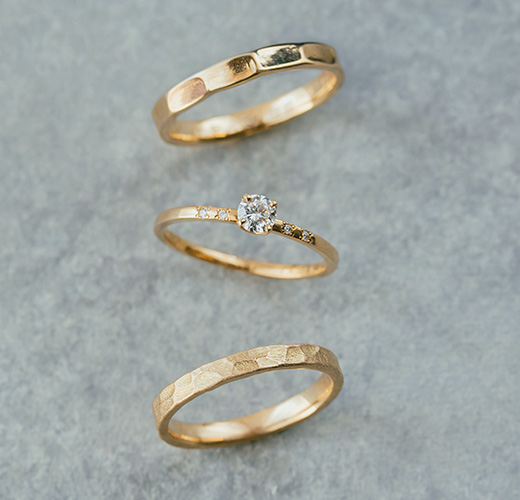
結婚指輪を手作りしよう。


作る時間も、大切な宝物。
一生に一度の特別な指輪だから、
永く愛せるものがいい――。
鎌倉彫金工房は、手作り結婚指輪・婚約指輪の工房です。世界にひとつの指輪を手作りして、忘れられない思い出と温かな絆を築く場所。1本の金属から生まれるお二人だけの輝きを思い出とともにお持ち帰りください。
MORE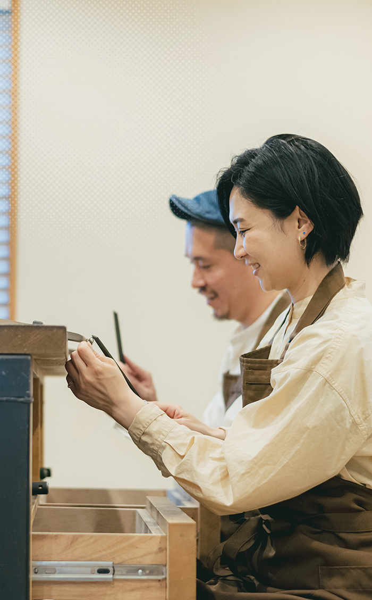
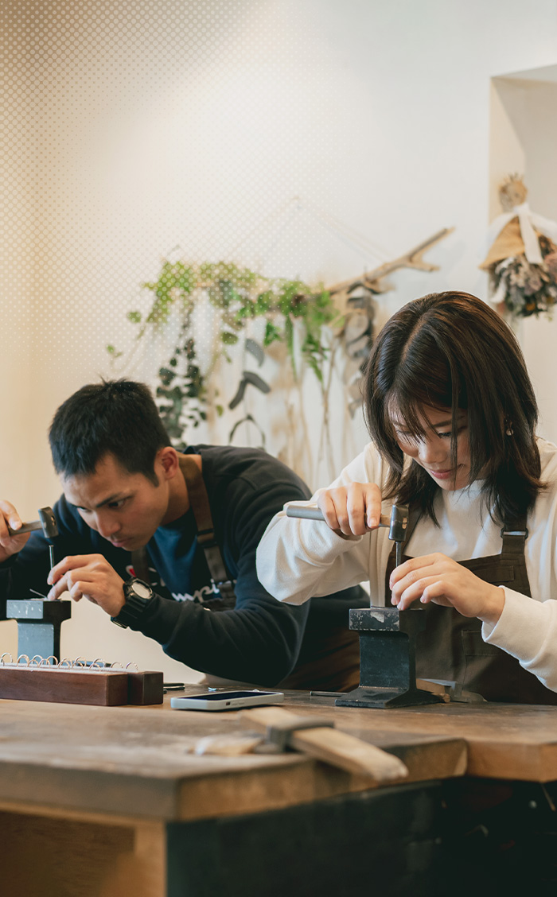
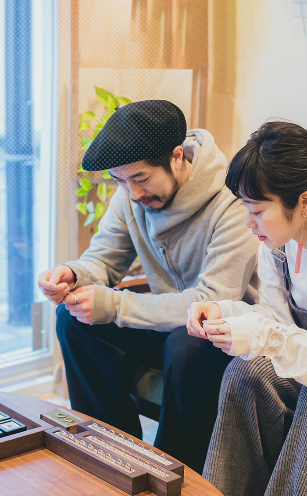
For married
結婚指輪・婚約指輪
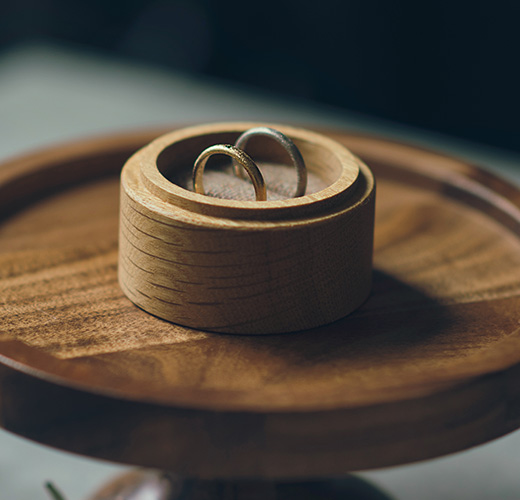
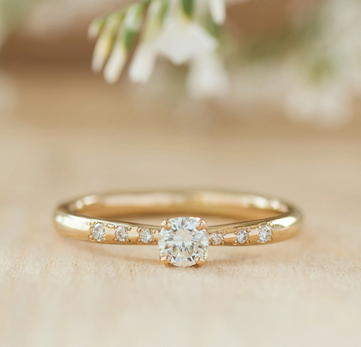
For fashion
ジュエリー・アクセサリー
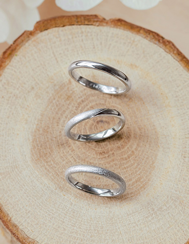
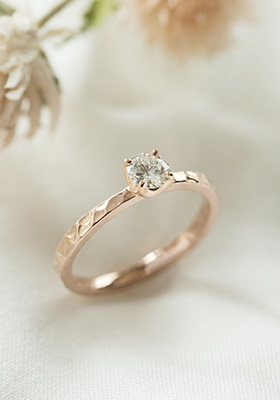
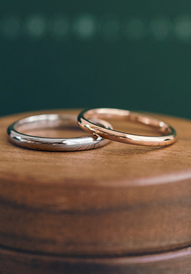
Special voice
お客さまの声
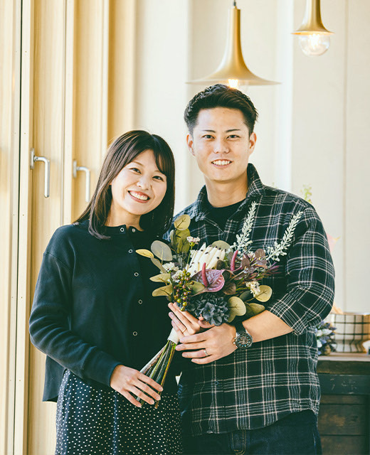
それぞれ好きなものを選べればという感じ。統一感なくていいんじゃないって
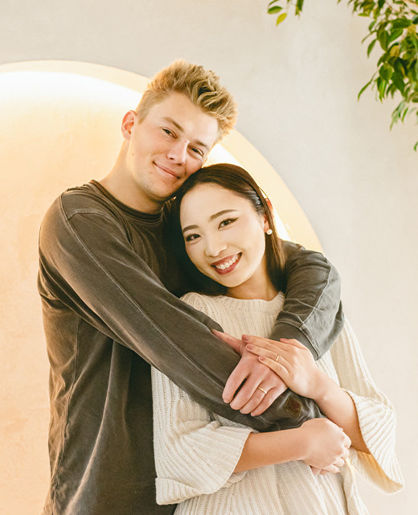
自然を感じながら鎌倉らしい場所で
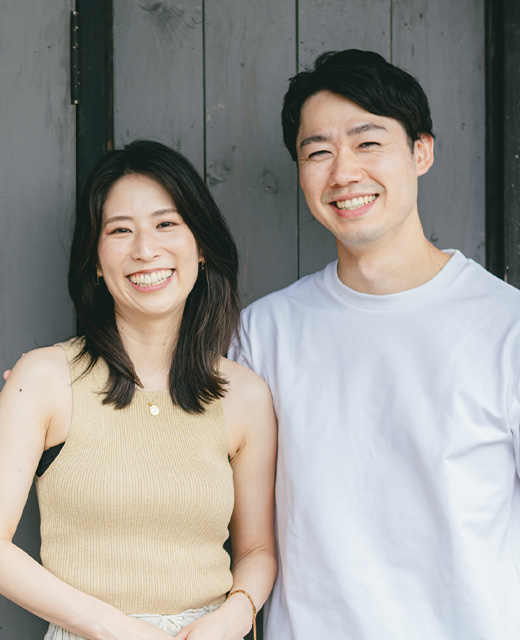
毎日つけたときに、いい気持ちでいられるものを
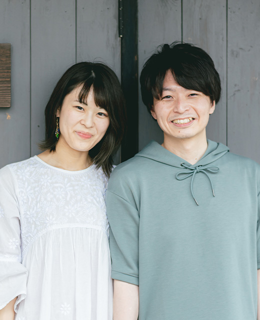
自分の気持ち、相手に対する気持ちを再確認できる機会になりました
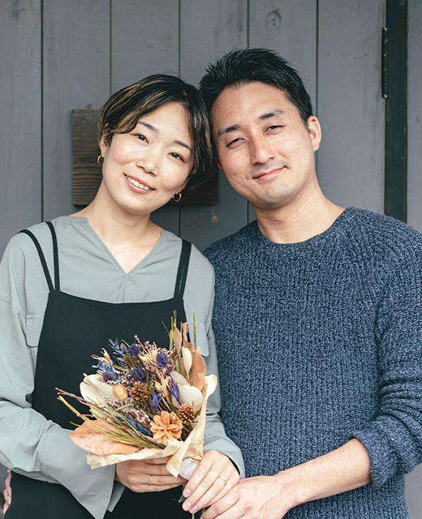
めちゃめちゃ硬くて全然曲がらないっていうのが印象的でした
Special voice
Information
お知らせ
Faq
よくある質問
Blog
工房日和
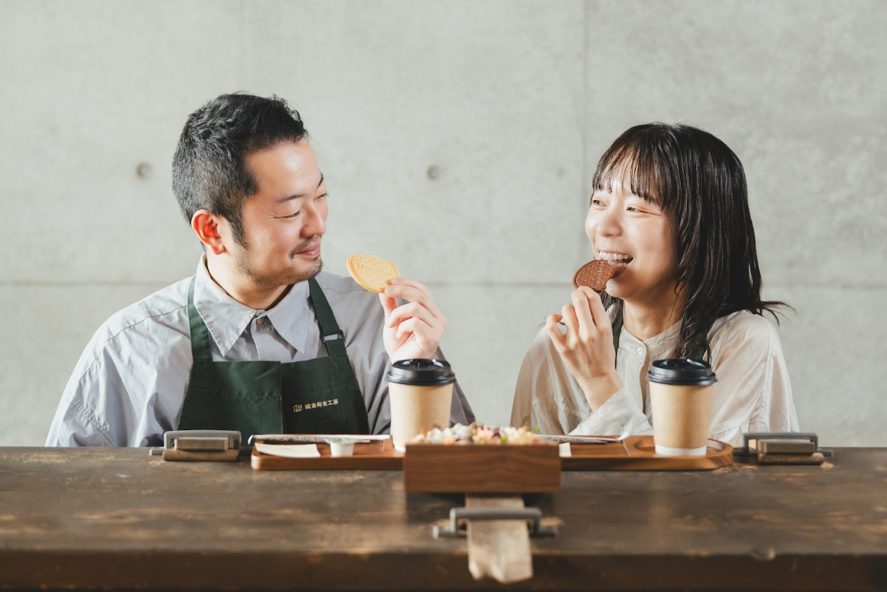
【鎌倉本店・11月平日午前限定】指輪制作のあとに、romi-unieのお菓子と紅茶を
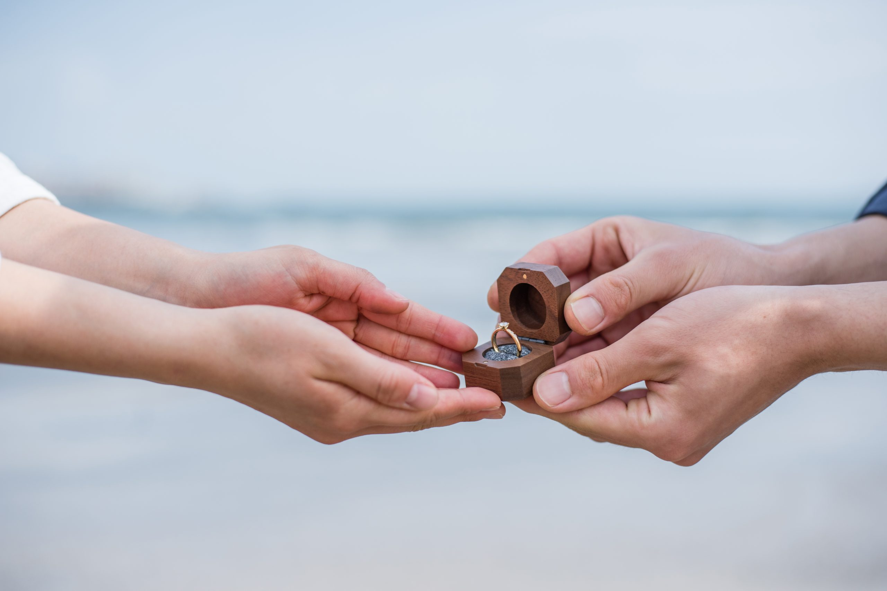
手作り婚約指輪に込める想い｜作る時間も大切な想い出に
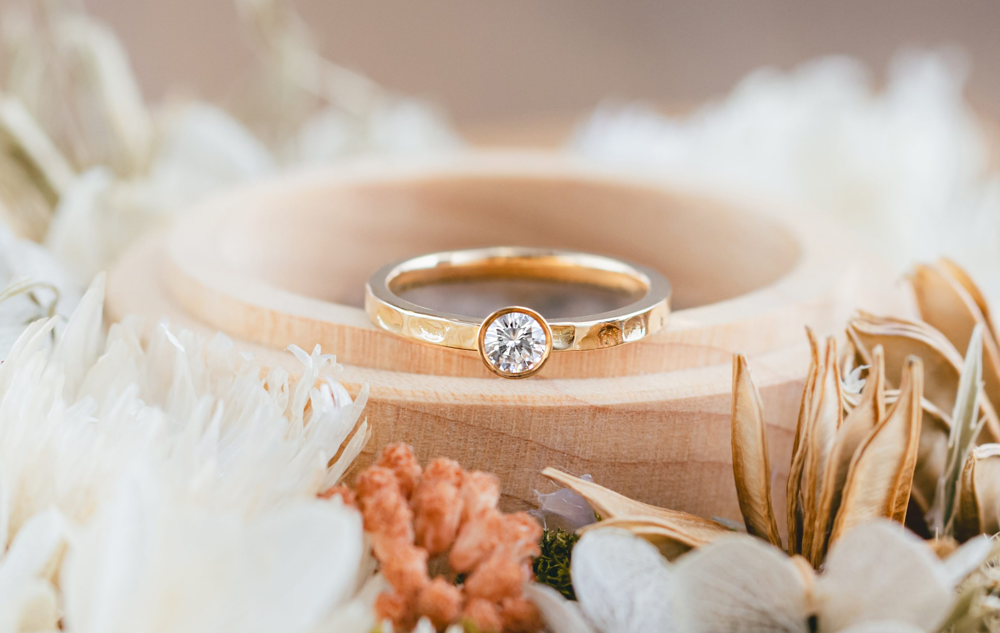
【鎌倉彫金工房 東京蔵前】工房周辺のプロポーズスポット
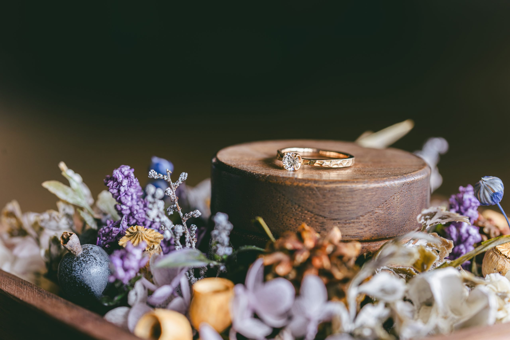
【大阪で秋のプロポーズ】二人の時間を彩るおすすめスポット3選
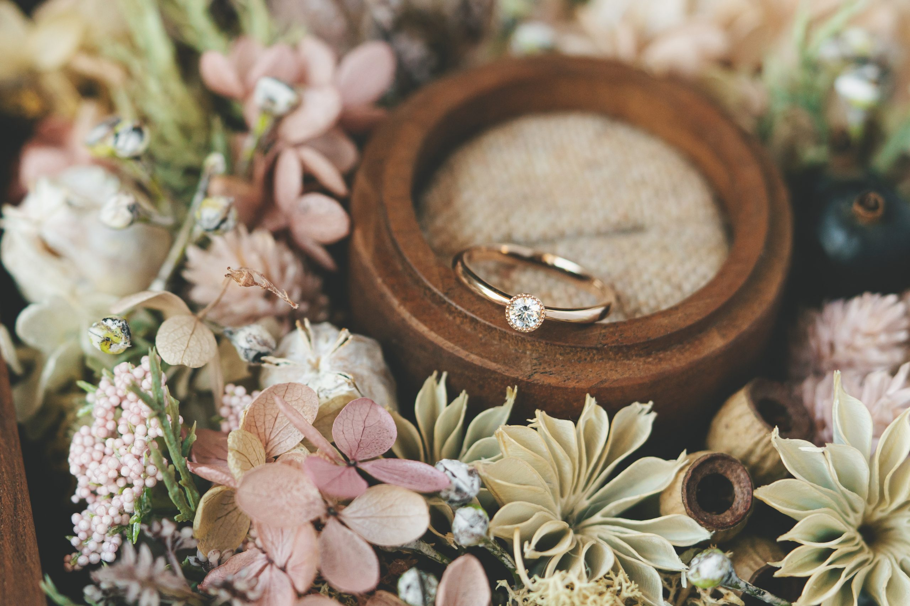
【横浜で秋のプロポーズ】二人で訪れたいおすすめスポット3選
Blog
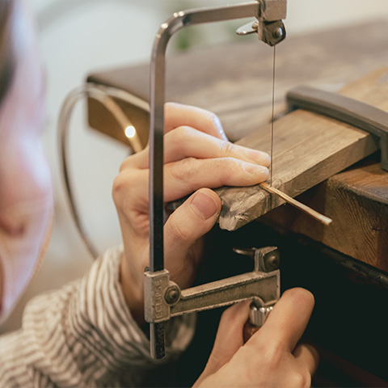
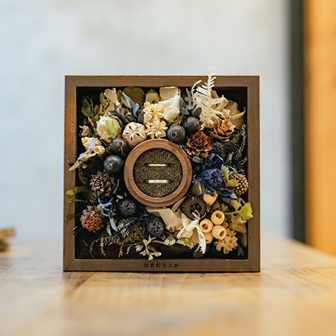
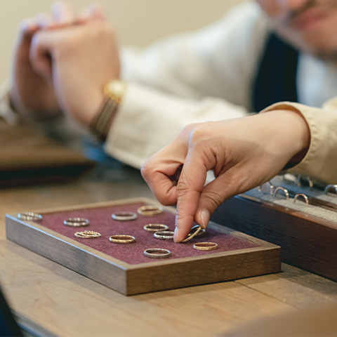
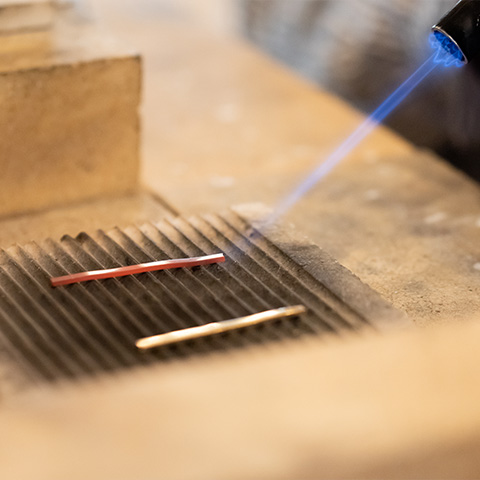
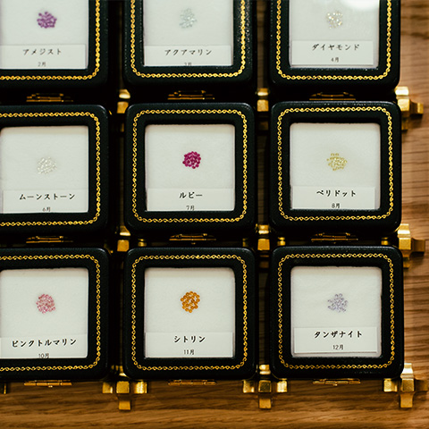
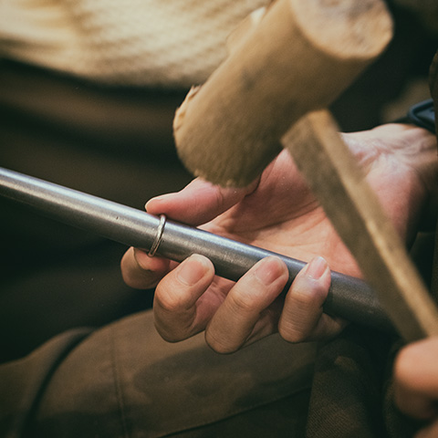
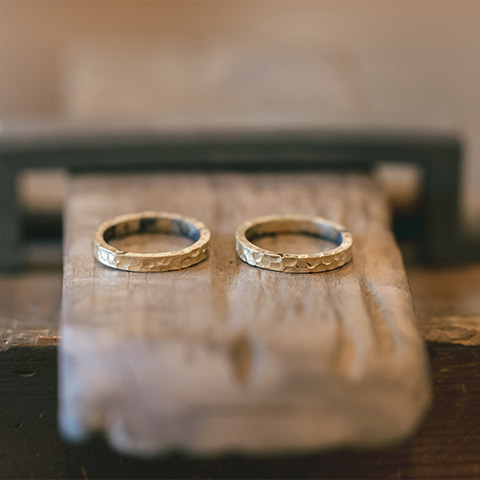
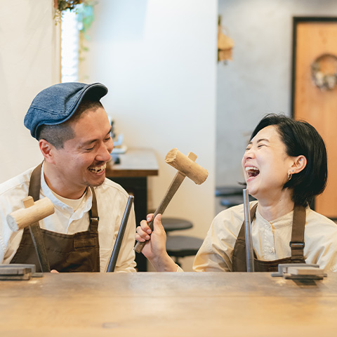
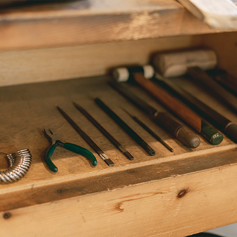